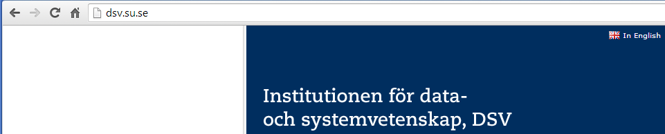
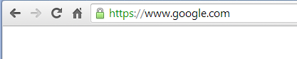

Tasks
Perform the following tasks.
- Start up the Google Chrome Browser and type in the address bar "http://dsv.su.se". Press Enter. The end result of this step should look similar to the image below.

- When the web page has loaded, click on the icon (that looks like a page) that is between the "Home" button and the web address you just typed in. The result should look something close to the image below.

NB: In Google Chrome, observe the information that is on the "Permissions" tab and then do the same with the "Connections" tab.
You can get further details about the information on these tabs by clicking the link "What do these mean" in the "Connections" tab
- Which application layer protocol was used to access the website "dsv.su.se"? Is this protocol secure as it is, i.e. in it's basic form? (Hint: Think in terms of confidentiality, integrity, server authentication, etc)
- From clicking the button to the left of the address bar, just before the web address, what information can you gather in relation to the interaction between you and the "dsv.su.se" server?
- Type "https://dsv.su.se" in the address bar and press "Enter". If this succeeds, observe the same details as in Step 1 and 2, and note the differences. If it does not work, explain what the reason could be for it not working.
- Type "http://www.google.com" in the address bar and press "Enter". If this succeeds, you should see the screen as is shown below.

In this case, notice that the protocol has changed to "https". What is "https"? Why did this change happen? What are the implications of this?
- Click on the green lock icon and observe the information in the dialog that drops down.
- What differences do you notice with this web server (www.google.com) as compared to the "dsv.su.se" one?
- Under the "Connection" tab click on the "Certificate Information" link. From the resulting dialog, go to the "General" tab.
Observe the "Certificate Informaton", "Issued to", "Issued by" and "Valid from" fields. Go to the "Certification Path" tab. Observe the "Certification Path" tab
and the "Certificate status" fields.
- Why are the "Valid from" and "Valid to" dates important?
- Type "https://cs2lab.dsv.su.se/moodle/login/index.php" into the web browser address bar and press "Enter".
- Did the website load, or did the browser issue an error message? If it issued an error message, what was the error message?
What do you notice in the address bar that is different?
- Click on the "Help me understand" link and read what it says. Click on the icon that is at the leftmost corner of the address bar (i.e. the lock icon with an 'x' on it). On the resulting dialog box, click on the "Connection" tab.
Observe keenly the information that is presented, then click on "Certificate Information" link.